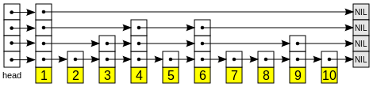

|
skiplist
|
вероятностная структура данных, которая содержит упорядоченный набор уникальных объектов. Подробнее...
#include <skiplist.h>
Классы | |
| class | Iterator |
| позволяет однонапрявленно итерироваться по контейнеру skiplist. Подробнее... | |
Открытые члены | |
| skiplist () | |
| Умолчательный конструктор. Подробнее... | |
| ~skiplist () | |
| Деструктор экземпляра, освобождает память. | |
| skiplist (const skiplist &) | |
| Копирующий конструктор. Подробнее... | |
| skiplist & | operator= (const skiplist &) |
| Оператор присваивания. Подробнее... | |
| template<typename InputIt > | |
| skiplist (InputIt first, InputIt last) | |
| конструктор, принимающий в качестве параметров два итератора. Подробнее... | |
| Iterator | begin () const |
| Возвращает итератор на первый элемент Подробнее... | |
| Iterator | end () const |
| Возвращает итератор на элемент, следующий за последним Подробнее... | |
| Iterator | lower_bound (const T &) const |
| возвращает итератор на первый элемент не меньше, чем заданное значение Подробнее... | |
| Iterator | upper_bound (const T &) const |
| возвращает итератор на первый элемент больше, чем определенное значение Подробнее... | |
| bool | empty () const |
| Проверяет отсутствие элементов в контейнере Подробнее... | |
| std::ptrdiff_t | size () const |
| Возвращает количество элементов в контейнере. Подробнее... | |
| void | clear () |
| Очищает контейнер Подробнее... | |
| Iterator | find (const T &) const |
| находит элемент с заданным ключом Подробнее... | |
| Iterator | insert (const T &) |
| Вставляет элемент Подробнее... | |
| Iterator | erase (const T &) |
| Удаляет элемент Подробнее... | |
| Iterator | erase (Iterator) |
| Удаляет элемент Подробнее... | |
| std::ptrdiff_t | count (const T &) const |
| находит количество элементов по ключу Подробнее... | |
вероятностная структура данных, которая содержит упорядоченный набор уникальных объектов.
| [in] | T | - тип, хранимый в структуре |
| [in] | Skip_Factor | - основание дроби 1/Skip_Factor - вероятности появления нового уровня у узла в списке |
skiplist - вероятностная структура данных, которая содержит упорядоченный набор уникальных объектов типа T. Операции поиска, удаления и вставки имеют логарифмическую сложность. В основе списка с пропусками лежит расширение отсортированного связного списка дополнительными связями, добавленными в случайных путях с биномиальным распределением, чтобы поиск по списку мог быстро пропускать части этого списка.

Нижний слой — это обычный упорядоченный связный список. Каждый более высокий слой представляет собой «выделенную полосу движения» для списков ниже, где элемент в i-м слое появляется в i+1-м слое с вероятностью 1/Skip_Factor.
Без указания значения Skip_Factor равен 2. При операции поиска, вставки и удаления ожидаемое число шагов в каждом связном списке от места начала в текущем списке до места перехода на более низкий уровень равно значению Skip_Factor. общие ожидаемые затраты на поиск — \(log_p n * p\), где p - шаблонный параметр Skip_Factor. Асимптотика O(log(n)), так как p является константным значением.
Умолчательный конструктор.
Создает пустой список.
| skiplist< T, Skip_Factor >::skiplist | ( | const skiplist< T, Skip_Factor > & | ) |
Копирующий конструктор.
Создается новый список с пропусками с идентичным набором элементов. Внутреннее строение полностью меняется в связи с рандомизированным принципом построения.
|
inline |
конструктор, принимающий в качестве параметров два итератора.
| [in] | first | итератор, указывающий на первый элемент упорядоченного набора элементов |
| [in] | last | итератор, указывающий на элемент после последнего в упорядоченном наборе элементов |
Позволяет создавать список с пропусками от другого контейнера c упорядоченным набором элементов.
| void skiplist< T, p >::clear |
Очищает контейнер
Делает недействительными все ссылки, указатели или итераторы указывающие на удалённые элементы.
Сложность
линейная от размера контейнера.
| std::ptrdiff_t skiplist< T, p >::count | ( | const T & | value | ) | const |
находит количество элементов по ключу
| value | - значение ключа |
| количество | элементов с ключом value |
Сложность
O(logN), где N - количество элементов в контейнере
| bool skiplist< T, p >::empty |
Проверяет отсутствие элементов в контейнере
| (Нет) |
| bool | true, если контейнер пуст, false иначе |
Сложность
константная.
Возвращает итератор на элемент, следующий за последним
| (Нет) |
| Iterator | на элемент, следующий за последним |
Сложность
константная.
| skiplist< T, p >::Iterator skiplist< T, p >::erase | ( | const T & | value | ) |
Удаляет элемент
Если элемент с таким значением отсутствует в контейнере, удаление не происходит.
| value | - удаляемое значение |
| Iterator | на следующий элемент после удаляемого. |
Сложность
O(logN), где N - количество элементов в контейнере
| Iterator skiplist< T, Skip_Factor >::erase | ( | Iterator | ) |
Удаляет элемент
Если элемент, на который указывает итератор, отсутствует в контейнере, удаление не происходит.
| it | - итератор на элемент для удаления |
| Iterator | на следующий элемент после удаляемого. |
Сложность
O(logN), где N - количество элементов в контейнере
| skiplist< T, p >::Iterator skiplist< T, p >::find | ( | const T & | value | ) | const |
находит элемент с заданным ключом
| value | - ключевое значение элемента для поиска. |
| Iterator | на элемент со значением value. Если такой элемент не найден, возвращается итератор, указывающий за конец списка (см. end()). |
Сложность
O(logN), где N - количество элементов в контейнере.
| skiplist< T, p >::Iterator skiplist< T, p >::insert | ( | const T & | insertingValue | ) |
Вставляет элемент
Если элемент с таким значением уже существует, вставка не происходит.
| value | - вставляемое значение |
| Iterator | на вставленный элемент |
Сложность
O(logN), где N - количество элементов в контейнере
| skiplist< T, p >::Iterator skiplist< T, p >::lower_bound | ( | const T & | value | ) | const |
возвращает итератор на первый элемент не меньше, чем заданное значение
| value | - ключевое значение для сравнения элементов. |
| Iterator | на первый элемент, который не меньше, чем value. Если такой элемент не найден, возвращается итератор за конец списка (см. end()). |
Сложность
O(logN), где N - количество элементов в контейнере.
| skiplist< T, p > & skiplist< T, p >::operator= | ( | const skiplist< T, Skip_Factor > & | ) |
Оператор присваивания.
Осуществляет глубокое копирование.
| std::ptrdiff_t skiplist< T, p >::size |
Возвращает количество элементов в контейнере.
| (Нет) |
| std::ptrdiff_t | - количество элементов в контейнере. |
Сложность
константная.
| skiplist< T, p >::Iterator skiplist< T, p >::upper_bound | ( | const T & | value | ) | const |
возвращает итератор на первый элемент больше, чем определенное значение
| value | - ключевое значение для сравнения элементов. |
| Iterator | на первый элемент, который больше, чем value. Если такой элемент не найден, возвращается итератор за конец списка (см. end()). |
Сложность
O(logN), где N - количество элементов в контейнере.
1.8.18